Who may merge what
The agent can open pull requests anywhere it has access. It may merge its own skills repository, because that is its knowledge and reviewing every line of notes would stall the loop. It may not merge the cluster repository.
It also isn't my account pushing. Its identity is its own app installation, so author and reviewer are different actors and the history says which did what.
An agent that can merge its own infrastructure changes can authorise its own widening. The one thing it must never do is approve the change that gives it more room. That is why the admission policies exist alongside the merge rule: two independent ways to say no.
The loop

Flux watches the repository, renders the manifests and applies them. Each top-level path is one reconciliation unit with its own interval and health checks.
The queue is never empty. Nothing floats on latest, the charts, images and actions
are pinned, and Renovate opens one pull request per version bump. That is the point of the loop:
most changes are routine, which is what makes an unusual one visible.
The runners that test the repository are pods in the cluster the repository describes, spawned by the Actions Runner Controller and discarded after the job. A bad change can break the thing that validates the next change, which is the honest version of testing.
The other applier
Flux is not the only thing that applies a merged diff. Host configuration is Ansible in the same repository, so a machine is rebuilt from a commit rather than repaired by hand. Secrets resolve from the vault at run time. Security updates install unattended and reboot on a staggered timetable, one host at a time, ordered so quorum never drops.

What CI proves, and what it doesn't
Three required checks gate the merge. All three are content gates, and none of them proves the change is correct. That is the review.
Lint
Malformed YAML caught before Flux tries to apply it.
Validate
Builds every Flux root with Kustomize, discovered from the sync files so new components are covered automatically.
Secret Scan
TruffleHog over the PR's commits rather than its tip, so a credential added and deleted in the same branch still fails.
None of it validates against the live API. A Kustomize build proves the tree assembles, not that the cluster will accept it, so a rejected field only shows up when Flux reconciles.
The unattended version
When an alert wakes it, the loop is: read the alert, look at the resources and logs, answer in the channel, and, if a manifest change is the fix, open a pull request and stop. It runs with the same access as any other session, so the worst an unattended run can do is investigate and talk. The merge waits for the human who was asleep.
The prompt says so, and the branch rules say so too: it is not the code owner, so it cannot supply the approval its own pull request needs. A rule the model can be talked out of is not a control, and neither is a rule the credential could ignore.
Its knowledge is versioned too
The agent loads task-specific skills from files in a repository, on demand: how to triage a stuck pod, how the alerting tree is shaped, how to publish this site. When a task teaches it something, it updates the skill and commits it in the same session, which is where most of the lessons on this site came from.
That repository is the only place it can merge without me, and it is the right place for the exception, because the failure mode of a bad note is a bad note rather than an outage.